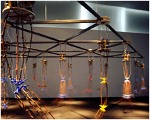

|  |
Soundtoys are new audio visual experiences; and this includes art toys, games, generative music, . At Home A 3-week residency program this May-June 2001 in Toronto, Canada 21 days of intensive interaction with inter . Beginning with a few different sequences, users can construct their own "movies" online and then save them to the site for others to incorporate as building blocks. Future versions will allow the uploading of new files as well. They are given 'kisekae ningyou' (dolls for changing clothes) and play changing clothes of the dolls. |